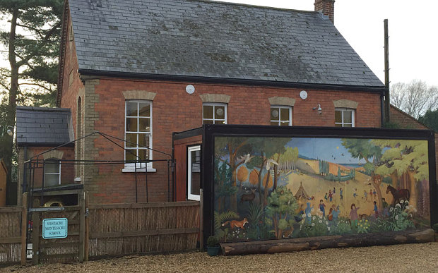
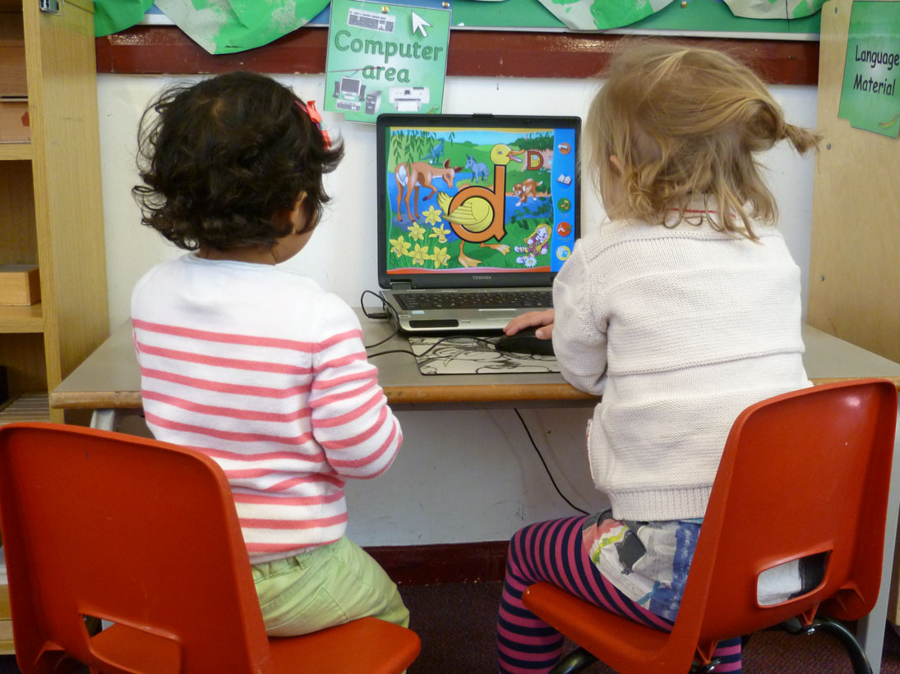

Montessori Nursery School Based in Kent, alongside Elm Avenue
Tel: 01634 978345
Email: elmavenue@gmail.com
AWARDED OUTSTANDING IN OUR RECENT OFSTED INSPECTION!
Welcome to Our Nursery
Elm Avenue Montessori Nursery is a privately run Nursery offering high quality professional Childcare for families in Chatham and the surrounding area. We care for children from 3 months to 5 years and we are open from 8am-6pm Monday-Friday. Full time and part time places are available including the option of school hours. Located near to the Chatham Football Grounds just a short walk from the town centre and Chatham Train station.
Our dedicated team of staff understand that children learn best when they are safe, supported and loved. We work hard to provide a stimulating environment where children learn through exploration and discovery. We follow the government’s Early Years Foundation Stage(EYFS) along side the Montessori Method of Education.
Children are based in different rooms dependent on their age and stage of development. Every classroom has been specially designed to create an environment where children can be supported to reach their full potential.

About
Newbury Gardens Day Nursery is part of The Forbury Group which was established in 1991. We are a privately run children’s day nursery.
Offering full and part time places to children from 3 months up to the age of 5 years.
Why Montessori?
All children want to learn. With the freedom to investigate the world around them, they will become active learners.
In the Montessori environment, children have the freedom (within limits) to choose their own activities.
Gallery
You're welcome to come and take a look our photo gallery.
It consists of various photos ranging from children learning, playing and exlporing, to various events we've held previously at the nursery.

News
We at Elm Avenue like to keep our parents update with the latest news and events that are due to take place at the nursery.
Dates & Fees
At all of our nurseries we offer free places for all 3 – 5 year olds.
We also offer free places for two year olds subject to qualifying criteria.
Please ask the nursery manager for more details.
Policies
We have an extensive number of policies in place, all of which can be seen in the Nursery Entrance Hall.
We are regularly inspected by Environmental Health and OFSTED. We endeavor to ensure that all staff practices remain in line with the current best practice.
Come by and Visit
We welcome visits to the Nursery for Parents and Children to view what we can offer and meet our dedicated team.
We provide an open and friendly environment where we encourage learning and development from an early age.